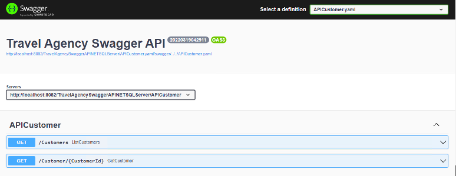

When you run an API object using the GeneXus .NET Generator, the browser opens a Swagger UI and helps you in viewing and interacting with the API generated.
To execute an API object with Swagger, you must set its Generate OpenAPI interface property to Yes.
After that, you only have to right click on the API Object and select Run.
The browser will open up with a Swagger user interface that will let you view and interact with the API generated:

Since GeneXus 17 Upgrade 10.
Documenting RESTFul services
Calling rest API Using Postman app
| Backlinks | |
| Toc:First Steps with API Objects | RestPath annotation |